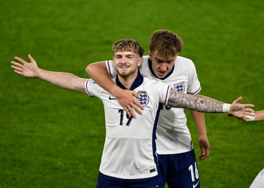
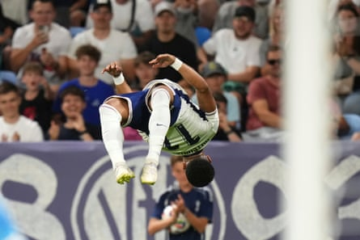

Whatever Lee Carsley goes on to achieve in his managerial career, this will be very hard to beat. With his England Under-21s having been pegged back by Germany after racing into a 2-0 lead through goals for Harvey Elliott and Omari Hutchinson, those of a negative disposition were probably thinking back to the 1970 World Cup when Sir Alf Ramsey’s reigning champions were eliminated after extra time in the same scenario.
But with Thomas Tuchel watching on from the stands after dashing across the Atlantic to be here, Carsley – who wasn’t even born back then – clearly had no such thoughts. Instead, he boldly decided to gamble by taking off Elliott and the captain, James McAtee, and was rewarded by the substitute Jonathan Rowe scoring with almost his first touch. It means the Young Lions have followed in the footsteps of Dave Sexton’s sides more than 40 years ago by winning successive European titles and their fourth in total. On this evidence, the future looks very bright indeed.
Carsley was calmness personified before kick-off as he cracked jokes with his assistant Ashley Cole and he had the luxury of being able to name an unchanged side from the semi-final victory over the Netherlands. The momentum gained after a much-improved performance in the second half of their final group stage game against a weakened Germany team helped propel an inexperienced group of players past Spain, the pre-tournament favourites, in the quarter-finals. But with their opponents at full strength this time, the threat posed by the 6ft 6in striker Nick Woltemade, who began the game as the tournament’s top scorer with six goals in four appearances, seemed obvious.
Harvey Elliott celebrates scoring an early opener for England.Photograph: Radovan Stoklasa/Reuters
Such was the interest in this game that Tuchel had flown more than 5,000 miles from the Club World Cup in the United States to be in attendance, while the Germany manager, Julian Nagelsmann, cut short his holiday in Mallorca. There was no sign of any nerves as England were quick to find their rhythm. Elliott started the move down the right flank that ended up with Hutchinson forcing Noah Atubolu into a save. But Nnamdi Collins made a hash of the clearance and the Liverpool forward was able to steady himself before picking his spot with great precision to score his fifth of the competition.
Charlie Cresswell – who is the other remaining squad member from 2023 – was inches away from doubling the lead when James McAtee fired across the face of goal. Then it was Jay Stansfield’s turn after another lightning break from Elliott, but the Birmingham striker decided against throwing himself at another McAtee pass with the goal gaping.
The Manchester City midfielder finally registered an assist when Germany were caught out again on the break and Hutchinson finished with aplomb, celebrating with an acrobatic flip. The usually understated Carsley could barely contain his delight on the touchline. A flowing move began by the outstanding Elliot Anderson’s clever back-heel then almost resulted in a brilliant team goal but Stansfield could only drag his shot wide.
Omari Hutchinson delivers an acrobatic flip after scoring England’s second goal.Photograph: Petr David Josek/AP
With Woltemade having to drop increasingly deeper, Germany seemed to have no answer. Even when the goalkeeper James Beadle almost handed them a goal when he briefly lost possession, England were still able to go straight up the other end and create another chance, with McAtee’s shot saved by Atubolu. But the loss of the limping Alex Scott, replaced by Liverpool’s Tyler Morton just before half-time, was a blow and that was compounded when Nelson Weiper pulled one back by heading home Paul Nebel’s cross in injury time.
England did not seem to be ruffled by conceding. McAtee was unlucky to see his effort drift just wide after a magnificent dummy left his marker for dead at the start of the second half.
But Germany looked so much more threatening when they made it into the final third and Beadle did well not to parry Nebel’s cross into the path of the waiting Woltemade, who is set to join Bayern Munich after this tournament. There was to be no such reprieve when Nebel – who also qualifies to play for the Republic of Ireland through his grandmother – saw his curling shot deflect off Stansfield and loop over Beadle’s despairing dive to equalise.
Carsley immediately sacrificed Stansfield for Brooke Norton-Cuffy, with Elliott brought into a more central role. Suddenly the game was on a knife edge as Norton-Cuffy could only direct his shot straight at Atubolu after being set up by Hutchinson. There were hearts in mouths on the England bench when Germany struck the crossbar in injury time via a deflection but they made it to extra time.
Carsley rolled the dice by taking off the exhausted McAtee and Elliott and it immediately paid dividends as Rowe’s deft header from Morton’s cross restored England’s lead.
“We have to dig in,” said Carsley as he gathered his players together in a huddle at the change of ends. “This is our time now.” He could not contain his delight at the full-time whistle after another late scare, when Germany hit the bar again. But Carsley and England would not be denied their place in the history books.